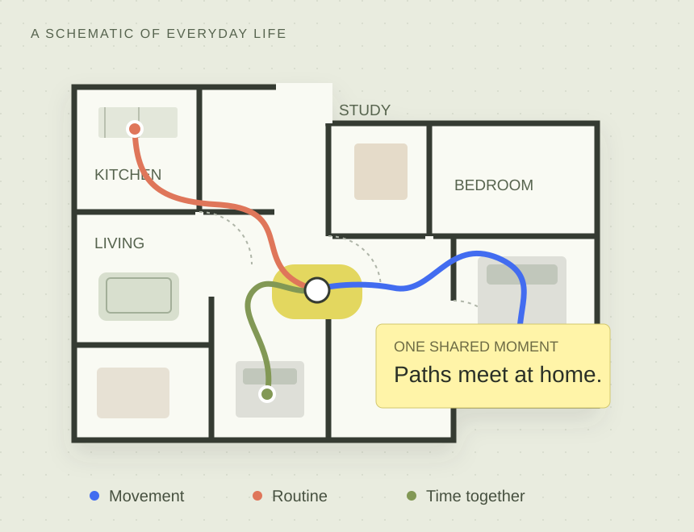
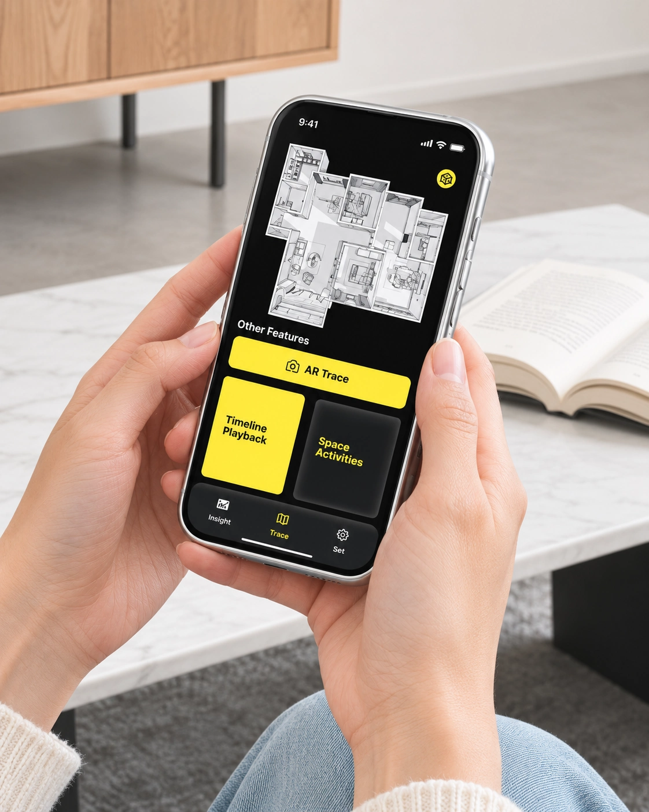
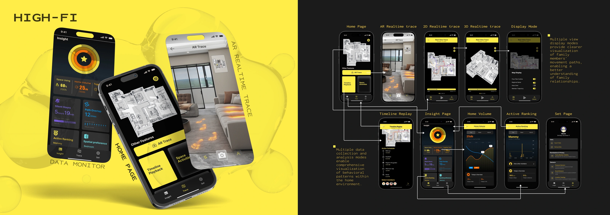

WHAT ARE YOU DOING? / INTERACTION DESIGN
What does
a home
remember?
Turning everyday movement into a gentler way of seeing life at home.
Follow the traces ↓
A SMALL OBSERVATION
The sofa remembers.
The floor remembers.
What if we could read it?
A worn cushion or a scuffed floor holds a record of ordinary life. This concept connects those physical traces with a view of space, time and the people in it.
01 / SPACE BECOMES THE INTERFACE
A day at home,
seen from another angle.
Start with a familiar place, then choose how to look at it.
Space ↔ Time
A household overview and a personal timeline offer two views of the same day.
02 / FROM PHYSICAL SIGNAL TO PERSONAL MEANING
Sense a little.
Notice a little more.
Pressure
Where weight is left.
Sound level
How a room changes.
Infrared
Signs of presence.
Activity traces
A record to reflect on.

Pressure, sound and infrared sensing were explored in place of cameras. Arduino experiments investigated the sensing approach; the AR view places the concept back in a familiar room.
03 / A HUMAN VIEW OF DATA
Patterns of living,
with room for privacy.
Interface excerpts use illustrative sample data to show the proposed experience.
Explore the original interface sheet

An independent interaction design concept, from observation to interface and sensor exploration.